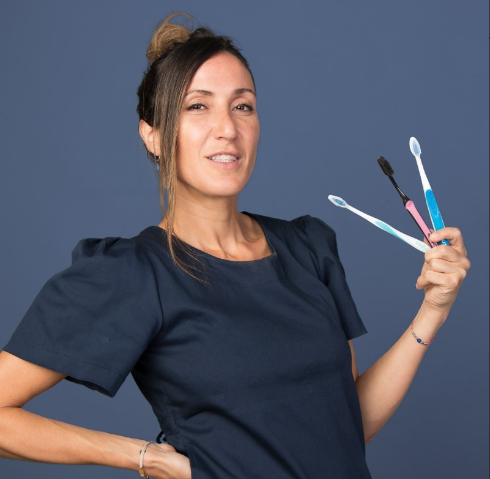
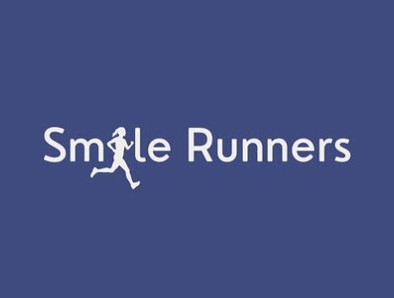

Transforma tu Sonrisa con Ortodoncia Invisible
Descubre cómo los alineadores transparentes pueden darte la sonrisa que siempre quisiste, de forma cómoda y discreta en Palermo.
Comienza tu Evaluación¿Cómo es tu mordida?
Selecciona la opción que más se parezca a tu sonrisa o si no estás seguro:
Nuestro Enfoque: Alineadores Invisibles
Nos especializamos en tratamientos de ortodoncia con alineadores transparentes, la opción más moderna y estética, utilizando planificación digital personalizada. ¡Comenzá rápido! Escaneo digital en tu 1ra visita, y en la 2da ya te llevás tus primeros alineadores.
- Prácticamente Invisible
- Cómodo y Removible
- ¡Alineadores listos en 10 días!
- Seguimiento remoto con Teleconsulta
- Fácil de Limpiar
- Con Resultados Predecibles
- ¡Blanqueamiento de Regalo al iniciar!
- Proceso Eficiente: Escaneo 1ª cita, ¡Inicio en la 2ª!
Creemos que la odontología es una inversión en calidad de vida, por eso buscamos que nuestros tratamientos sean accesibles.
Más Info por WhatsAppConoce a la Dra. Daniela Tkach y Nuestro Enfoque Integral
Enfoque integral, especialista en ortodoncia, 17 años de experiencia.
Nuestro consultorio en Palermo Chico es un espacio moderno y cómodo, equipado con la última tecnología, diseñado para que tu experiencia sea tan placentera como efectiva.
Además de ser especialistas en ortodoncia invisible, ofrecemos servicios de odontología general para cuidar tu salud bucal de forma completa.
Odontología General y Especialidades
- Coronas de porcelana pura (escáner + instalación en 7 días).
- Prótesis y rehabilitación.
- Limpieza periodontal con periodoncista.
- Implantología.
- Todas las especialidades en el consultorio.
Contamos con un equipo interdisciplinario que nos permite abordar cada caso con una visión integral, asegurando los mejores resultados funcionales y estéticos.
Lo que dicen nuestros pacientes
"Kiara no le gustaban los dentistas, pero logramos que se involucre en el tratamiento, eso se reflejó en compromiso y confianza. ¡Felices con los resultados de la Ortodoncia Invisible!"
"El proceso fue mucho más rápido y cómodo de lo que imaginaba. Los alineadores son súper discretos. ¡Valió totalmente la pena!"
"Excelente atención y profesionalismo. La Dra. Tkach es muy clara y dedicada. ¡Mi sonrisa cambió por completo!"
SmileRunners: Beneficios de la ortodoncia para el running
Correr con una mordida equilibrada favorece una mejor respiración y postura. Una dentadura alineada reduce tensiones en la mandíbula y ayuda a evitar molestias en cuello y espalda.
Si eres runner y quieres potenciar tu rendimiento, síguenos en @smilerunners para consejos y motivación.
Pon a prueba tus conocimientos en nuestra Trivia.
Preguntas Frecuentes
¿El tratamiento con alineadores invisibles duele?
Es normal sentir una leve presión o molestia los primeros días al cambiar a un nuevo juego de alineadores, especialmente las primeras horas. Esta sensación indica que los alineadores están funcionando y es temporal y manejable.
¿Cuánto tiempo dura el tratamiento?
La duración varía según la complejidad de cada caso, generalmente desde los 6 meses hasta 24 meses o más en situaciones complejas. Te daremos una estimación precisa del tiempo en tu evaluación inicial después del escaneo digital.
¿Puedo comer y beber con los alineadores puestos?
No debes comer con los alineadores puestos. Puedes tomar bebidas como café, mate o gaseosas siempre que no estén muy calientes, ya que el calor podría deformarlos. Lo ideal es beber solo agua fría o natural con ellos puestos. Para otras bebidas, es mejor retirarlos.
¿Cómo se limpian los alineadores?
Límpialos con un cepillo de cerdas suaves (diferente al que usas para tus dientes) y agua fría o tibia. No uses pasta dental, ya que puede rayarlos y opacarlos. Puedes usar pastillas limpiadoras efervescentes específicas disueltas en agua fría. Guárdalos siempre en su caja cuando no los uses para evitar que se manchen o tomen olor.
¿Necesitaré usar retenedores después?
Sí, el uso de retenedores (fijos o removibles, según el caso) es fundamental después de finalizar el tratamiento con alineadores para mantener los resultados obtenidos a largo plazo y evitar que los dientes vuelvan a moverse.
¿Cuántas horas al día debo usar los alineadores?
Es fundamental usarlos al menos 22 horas al día para asegurar la efectividad y rapidez del tratamiento. El compromiso con las horas de uso es clave para el éxito.
¿Qué pasa si un día los usé menos horas?
Si algún día no cumpliste las 22 horas, puedes compensarlo usando ese mismo juego de alineadores un día adicional antes de pasar al siguiente par.
¿Puedo hablar normalmente con los alineadores?
Sí. Al principio puedes notar un leve cambio en la pronunciación o sentir los alineadores un poco extraños, pero te adaptarás muy rápidamente en pocos días.
¿Qué hago si voy a viajar?
Avísanos con anticipación. Podemos entregarte los juegos de alineadores siguientes y darte las indicaciones para los cambios durante tu viaje, asegurando la continuidad del tratamiento.
¿Son importantes los controles? ¿Pueden ser remotos?
Sí, los controles periódicos son obligatorios y cruciales para verificar que el tratamiento avanza correctamente. Ofrecemos la posibilidad de realizar seguimientos mediante teleconsulta online, que tienen la misma validez e importancia que las visitas presenciales para monitorear tu progreso.
¿Qué son los 'chewies' o mordedores?
Son pequeños cilindros de silicona que te entregamos. Morderlos suavemente ayuda a que los alineadores se asienten correctamente sobre los dientes y los atachments, asegurando que ejerzan la presión adecuada. Es recomendable usarlos unos minutos cada vez que te colocas los alineadores.
Agenda tu Consulta / Ubícanos
Da el primer paso hacia tu nueva sonrisa. Contáctanos, agenda tu turno online o visítanos:
💬WhatsApp: +54 9 11 2889 2043
📞Teléfono: 11 2889 2043
✉️Email: Carillascastelar@gmail.com
📷 Instagram: @ortodonciafast @smilerunners
📍Dirección: República de la India 2731, Palermo Chico, Buenos Aires